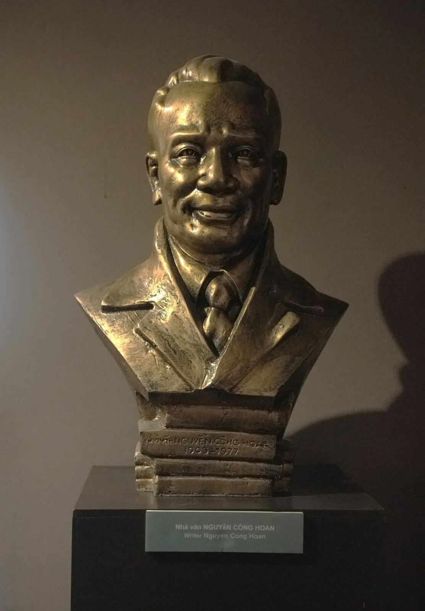
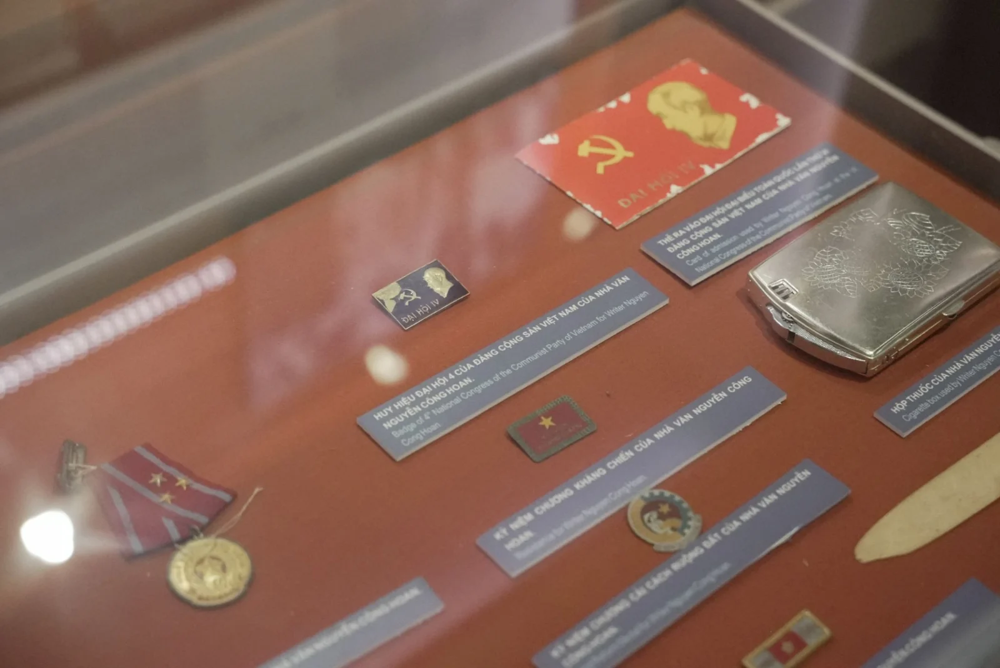
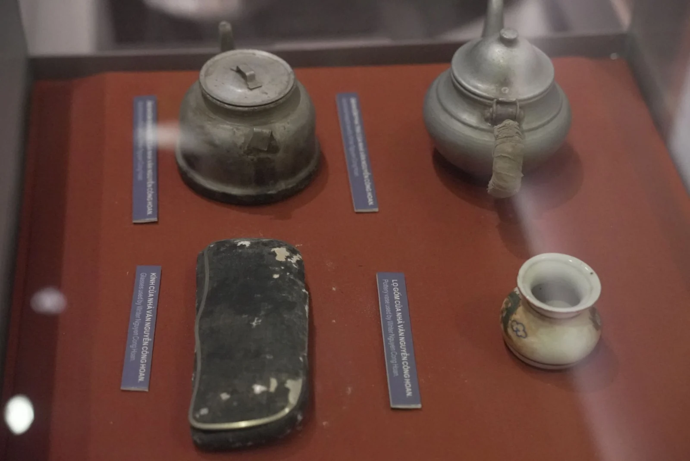
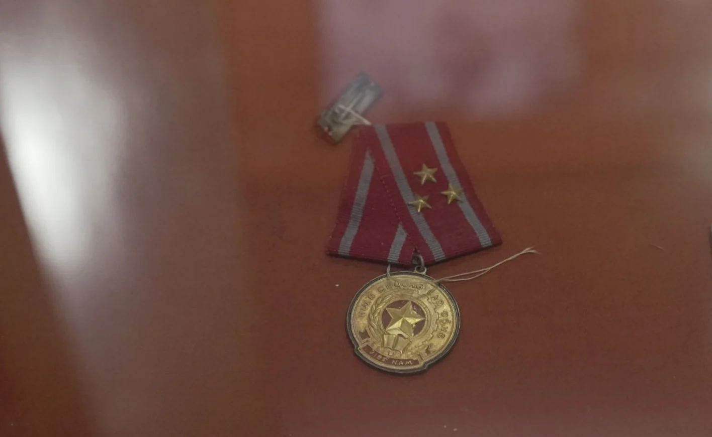
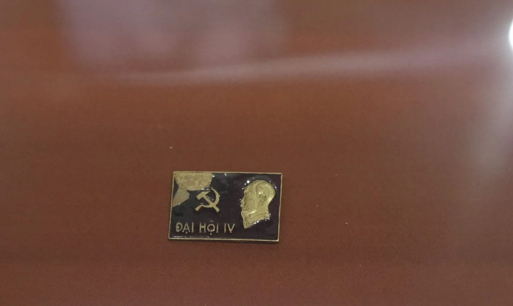

Những kỷ vật của nhà văn Nguyễn Công Hoan đang được trưng bày tại Bảo tàng Văn học Việt Nam mở ra một góc nhìn gần gũi về cuộc đời và sự nghiệp của một cây bút tiêu biểu. Mỗi hiện vật góp phần giúp công chúng hiểu thêm về con người, dấu ấn của nhà văn qua những dấu tích còn được lưu giữ.





Bảo tàng Văn học Việt Nam